CS184/284A Spring 2025 Homework 3 Write-Up
Owen Ye, Andy Yang.
Link to webpage: https://cal-cs184-student.github.io/hw-webpages-ayangsea
Link to GitHub repository: https://github.com/cal-cs184-student/hw2-meshedit-andyye

Overview
Give a high-level overview of what you implemented in this homework. Think about what you've built as a whole. Share your thoughts on what interesting things you've learned from completing the homework.Part 1: Ray Generation and Scene Intersection
In our ray generation pipeline, we first convert from image space to camera space. Since image coordinates range from 0 to 1 and camera coordinates range from -0.5 to 0.5,
we had to adjust accordingly. Then, we scaled the points by tan(hFov / 2) on the x axis and tan(hFov / 2) on the y axis, and setting z = -1 to obtain the camera coordinates. To convert to world space,
we multiply this vector by the c2w matrix and normalize it. Then, we generate the ray with that direction vector, and also set max_t to fclip and min_t to nclip.
Next, the ray is tested for intersections with each object in the scene, updating the max_t value along the way to reduce the number of calculations that may happen. The closest intersection
is stored in the intersection struct and then passed to shading.
Our triangle intersection method precisely follows the Moller Trumbore Algorithm outlined in class. Using the three points of the triangle, we compute E1, E2, S, S1, and S2, and we derive t, b1, and b2, and b3 (where b3 - 1 - b1 - b2). We are able to detect if the ray intersects with the triangle if the following cases are satisfied: if min_t < t < max_t and b1 >= 0 and b2 >= 0 and b1 + b2 <= 1. If this condition is satisfied, we calculate the surface norm of the intersection as b1 * n1 + b2 * n2 + b3 * n3; where n1, n2, and n3 are the vertex normals of the triangle
Below are some examples of small dae images with normal shading.

|

|

|
Part 2: Bounding Volume Hierarchy
We first compute the bounding box of all primitives and if there are few enough, just make a leaf node. Otherwise we find the best axis to split on by computing the average centroid of all primitives and counting how balanced a split would be on each axis, the axis whose split is most even (closest to half on each side) is chosen. We then partition the primitives into two groups based on whether their centroid falls below or above the average on that axis, with a fallback to splitting at the midpoint if all primitives end up on one side. Finally we create our node and recursively build the left and right child nodes, setting the left and right attributes of the current node respectively.
Below are some examples of large dae files that can only render with bvh acceleration.

|

|

|

|
When running the command ╰─ ./pathtracer -t 8 -r 800 600 -f CBdragon.png ../dae/sky/CBdragon.dae (trying to rdner the dragon file with 8 threads), it took my local machine 236.3127s to run without BVH acceleration, but with BVH acceleration, it only took 0.0696s, a speedup of around 3,400 times. Similarly, for the cow dae file, rendering without BVH took 9.7753s and with BVH took 0.0332s. Overall, rendering with BVH is much faster than without, and some objects would be impsosible to render without it.
Part 3: Direct Illumination
In uniform hemisphere sampling, we estimate direct lighting on a point by sampling ray directions uniformly in the hemisphere, regardless of importance. Following the spec, we approximate the reflection equation integral using a Monte Carlo estimator. I iterated overscene->lights.size() * ns_area_light samples as defined by the starter code.
For every sample, I drew a random direction from the hemisphere using hemisphereSampler->get_sample(), transformed it to world space using the o2w matrix, and cast a ray
from hit_p in that direction. If the ray intersected a light source, I accumulated its contribution using the reflection equation: the sampled emission times the BSDF times cos(θ),
divided by the uniform hemisphere PDF of 1/(2π). I then averaged all contributions over the total number of samples and returned the result.
In importance sampling, rather than sampling random directions, I looped over each light in
scene->lights and sampled directions toward it using sample_L, which returns the emitted radiance,
a direction toward the light, the distance to it, and the PDF. If the sampled direction was below the surface (checked with regards to the z-component in object space), I skipped it. Otherwise, I cast a shadow ray from hit_p
toward the light with max_t set to distToLight - EPS_F to only detect objects between the hit point and the light. If nothing blocked the path, I accumulated the same reflection equation terms.
In addition, delta lights only required a single sample since their contribution has no variance. This method converges much faster since every sample targets an actual light source. I determined delta status with the is_delta_light() method.
Below are renders of CBbunny.dae with both direct lighting methods (64 samples per pixel, 32 light rays):
I used the following generation functions.
./pathtracer -t 8 -s 64 -l 32 -m 6 -H -f CBbunny_H_64_32.png -r 480 360 ../dae/sky/CBbunny.dae for uniform hemisphere sampling.
./pathtracer -t 8 -s 64 -l 32 -m 6 -f bunny_64_32.png -r 480 360 ../dae/sky/CBbunny.dae for importance sampling


Bunny using importance sampling with 1 sample per pixel and varying light rays (1, 4, 16, 64):


Part 4: Global Illumination
For indirect lighting, I implemented at_least_one_bounce_radiance, which traces multi-bounce inverse paths through the scene. At each hit point, I call one_bounce_radiance to get the direct lighting, then sample a new direction using sample_f on the BSDF to figure out where the light came from to arrive at that point. I cast a ray in that sampled direction and recursively call at_least_one_bounce_radiance on the new hit point, weighting the result by BSDF × cos θ / PDF.If isAccumBounces is true, I accumulate all light along the path up to max_ray_depth. If false, I only return the light at the max_ray_depth-th bounce. The recursion stops when r.depth <= 1, and I initialize the camera ray's depths to max_ray_depth in raytrace_pixel, decrementing with each recursive call.
Since integrating over all paths of all lengths is computationally infeasible, I use Russian Roulette with a 0.35 termination probability (as suggested by the spec) for unbiased random termination, dividing by the continuation probability to compensate and make sure the estimated stays unbiased. I always trace at least one indirect bounce regardless of Russian Roulette. If the new ray doesn't intersect the scene, it can't recurse.
In est_radiance_global_illumination, I combine the zero-bounce radiance (emitted light) with the result of at_least_one_bounce_radiance for the full global illumination estimate.
Below are some images rendered with global (direct and indirect) illumination.
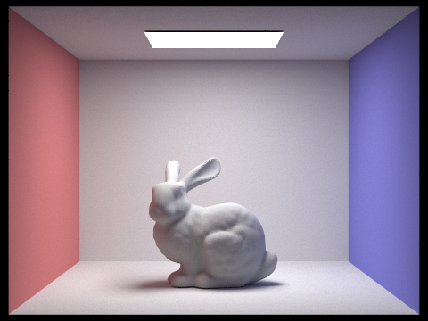
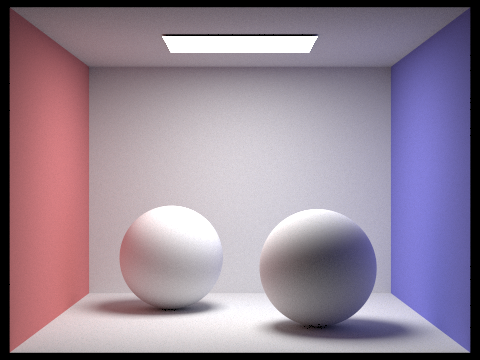
Below are some images rendered with global (direct and indirect) illumination.
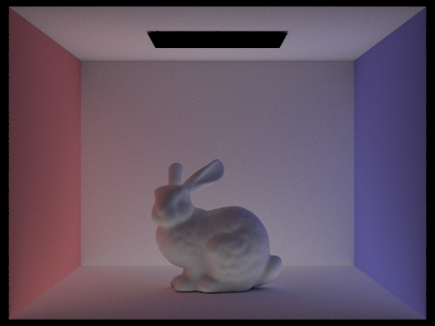
Below are renders of CBbunny.dae showing the mth bounce of light with isAccumBounces=false (1024 samples per pixel).
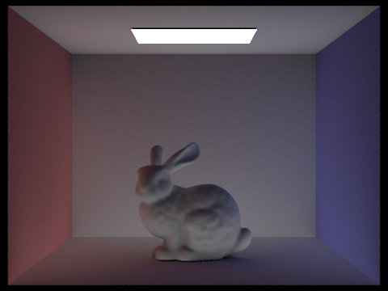
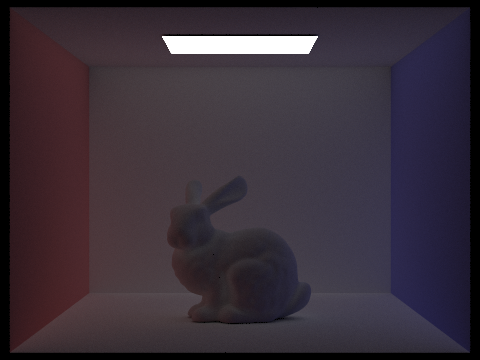
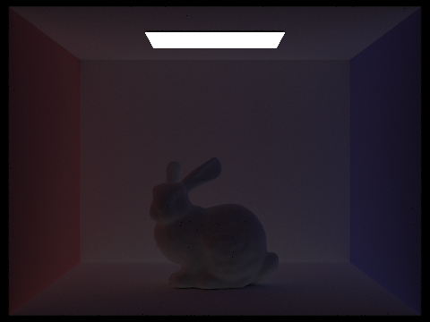
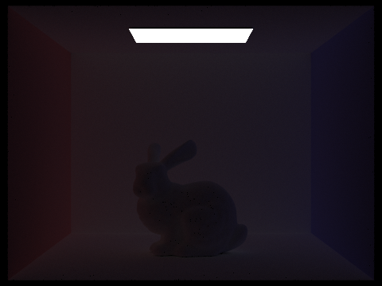
Below are renders of CBbunny.dae with accumulated bounces (isAccumBounces=true) for max_ray_depth 0 through 5 (1024 samples per pixel).
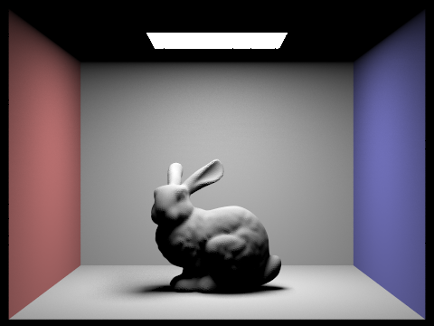
CBbunny with russian roulette rendering.
|
|
|
|
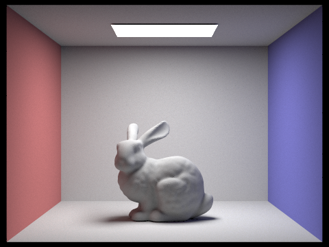 |
|
|
|
|
Below are renders of CBbunny.dae with varying samples per pixel (4 light rays, max_ray_depth = 5).
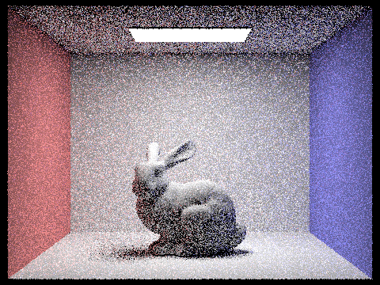
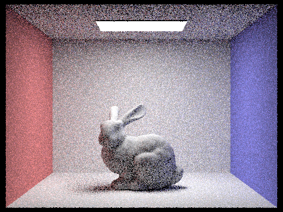
Part 5: Adaptive Sampling
Adaptive sampling is a technique that is used to minimize the number of samples we use per pixel by trying to identify when each pixel has converged. At every fixed interval of samples for each pixel, we calculate the mean and standard deviation to obtain the pixel's convergence with the equation \(I = \frac{1.96\,\sigma}{\sqrt{\mu}} \). If this Z score is less than a max tolerance defined in the parameters,then we will break out of the stop sampling and go onto the next pixel. Our implementation follows exactly what is provided on the spec. In our sampling loop, we keep track of two variables \(S_1 = \sum x_i \) and \(S_2 = \sum x_i^2 \). We also keep track of a # samples tried variable, and check if it is a multiple of our interval. If it is, we use our predefined \(S_1) and \(S_2) variables to compute the mean, std dev, and radiance. If it is less than our threshold, we break out of the sampling loop early. We are sure to populate sampleCountBuffer with the correct amount of samples actually used.
Below are two scenes rendered with 2048 samples per pixel, along with their sampling rate images.
|
|
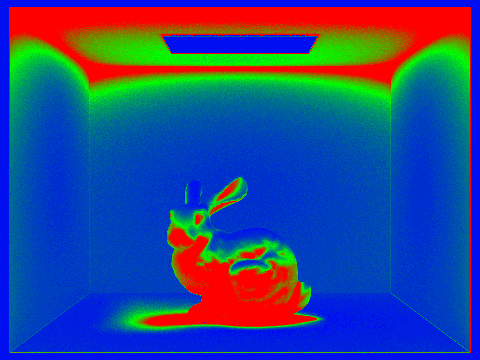 |
|
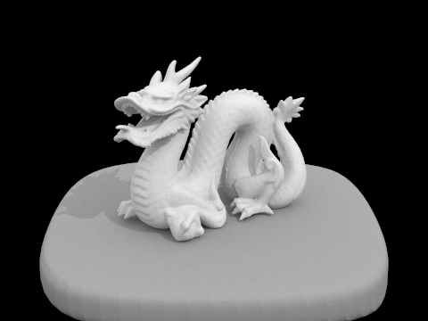 |
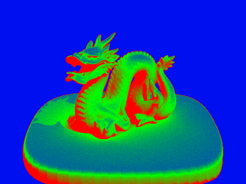 |